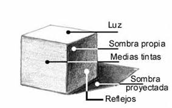
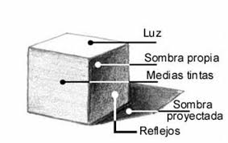
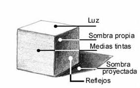

Técnicas Básicas de Sombreado con Lápiz
El sombreado es esencial para dar volumen y realismo a tus obras. Aprende desde los trazos básicos hasta técnicas avanzadas de degradado y contraste.

 

Descubre técnicas, tutoriales y consejos para mejorar tus dibujos
En este espacio encontrarás recursos y artículos para aprender y perfeccionar tus habilidades en el dibujo realista, tanto tradicional como digital.
El sombreado es esencial para dar volumen y realismo a tus obras. Aprende desde los trazos básicos hasta técnicas avanzadas de degradado y contraste.

Comienza en el arte digital con consejos prácticos y materiales accesibles. Explora diferentes técnicas y desarrolla tu propio estilo.
Explora algunos de los mejores trabajos de nuestra comunidad.
¿Tienes dudas o sugerencias? Escríbenos a contacto@blogdedibujo.com